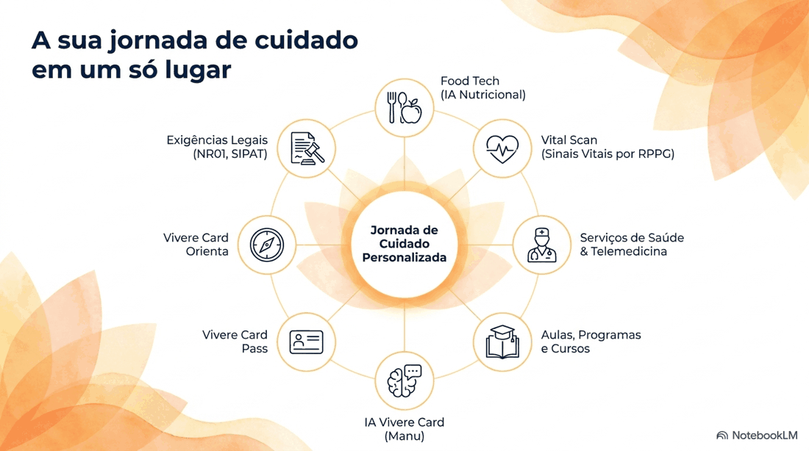

Mapear
Questionário online sobre fatores de riscos psicossociais.
● BEM-ESTAR QUE ACOMPANHA A VIDA
Saúde, cuidado e bem-estar conectados em uma só plataforma. Para a sua rotina. Para as pessoas que fazem sua empresa.
Duas jornadas. O mesmo cuidado com as pessoas.
SEU PRÓXIMO PASSO
Escolha seu caminho e descubra as possibilidades da Vivere Card.
OLHAR INTEGRAL, CUIDADO CONECTADO
Seu bem-estar envolve diferentes dimensões. A Vivere Card reúne caminhos para cuidar de cada uma delas.
Movimento e autocuidado.
Pausa e acolhimento.
Alimentação no dia a dia.
Relações e apoio.
Orientação para suas escolhas.
UM ECOSSISTEMA DE POSSIBILIDADES
Explore os recursos apresentados nos materiais da Vivere Card. A disponibilidade depende da solução contratada.
Explore cada solução para conhecer sua proposta e condições de uso.
CUIDADO DENTRO E FORA DO TRABALHO
VIVERE CARD PARA EMPRESAS
Conecte colaboradores a uma jornada de bem-estar com conteúdos, ferramentas digitais e serviços de apoio.
Proposta definida conforme as necessidades da empresa.
VIVERE CARD PARA VOCÊ
Encontre novas formas de se movimentar, se alimentar e fazer uma pausa. Reúna seu cuidado em um só lugar, com recursos para diferentes momentos da vida.
Explore uma aula ou prática.
Conheça os conteúdos de meditação.
Descubra as ferramentas de autocuidado.
SAÚDE E SEGURANÇA NO TRABALHO
O programa Vivere Card e Segurança no Trabalho apoia o mapeamento de fatores de riscos psicossociais e a organização de ações no ambiente de trabalho.
Questionário online sobre fatores de riscos psicossociais.
Painel com resultados e recomendações por pilar e nível de risco.
Playbook, conteúdos para lideranças, SIPAT e prevenção ao assédio.
Escopo e aplicação devem ser avaliados com os responsáveis técnicos da empresa. O programa não representa garantia automática de conformidade legal.
DO PRIMEIRO CONTATO À SUA ROTINA

Ecossistema apresentado no material Fluid Wellness.
TECNOLOGIA COM UM PROPÓSITO
A plataforma reúne conteúdos, ferramentas e acesso a serviços em uma jornada de bem-estar. Você explora as possibilidades conforme suas necessidades e as condições de acesso.
Explorar o ecossistema →Esta Home apresenta os dois caminhos com o mesmo destaque. Empresas podem conversar sobre soluções para suas equipes; pessoas físicas podem consultar as possibilidades de acesso individual e suas condições.
O portfólio apresenta conteúdos, ferramentas digitais, Orienta, Pass, serviços de saúde e SST. A inclusão, disponibilidade e eventuais cobranças por uso dependem da solução contratada. Consulte a proposta antes da contratação.
Os valores não estão publicados neste protótipo. Preencha o formulário para consultar as condições pelo WhatsApp. Nenhuma contratação ou cobrança é realizada aqui.
Os recursos digitais apresentados são destinados ao apoio ao bem-estar. Não devem ser usados como diagnóstico ou substituir avaliação e acompanhamento de profissionais habilitados.
O programa oferece recursos de mapeamento, orientação e engajamento. A adequação e a aplicação das ações precisam ser avaliadas pelos responsáveis técnicos da empresa, considerando suas atividades e obrigações.
O WhatsApp abre uma conversa com a Vivere Card no número (11) 5026-5833, com os dados do formulário em uma mensagem preenchida. Revise a mensagem e confirme o envio no próprio WhatsApp.
O PRÓXIMO PASSO É UMA CONVERSA
Escolha seu perfil e conte o que precisa. Continue pelo WhatsApp para conversar com a Vivere Card.
Para a sua vida.
Para as pessoas da sua empresa.